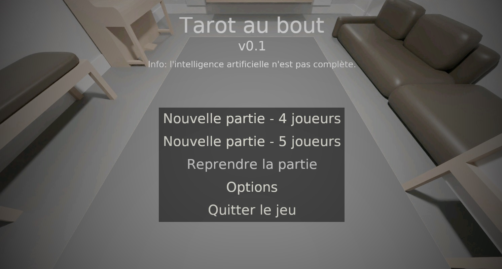
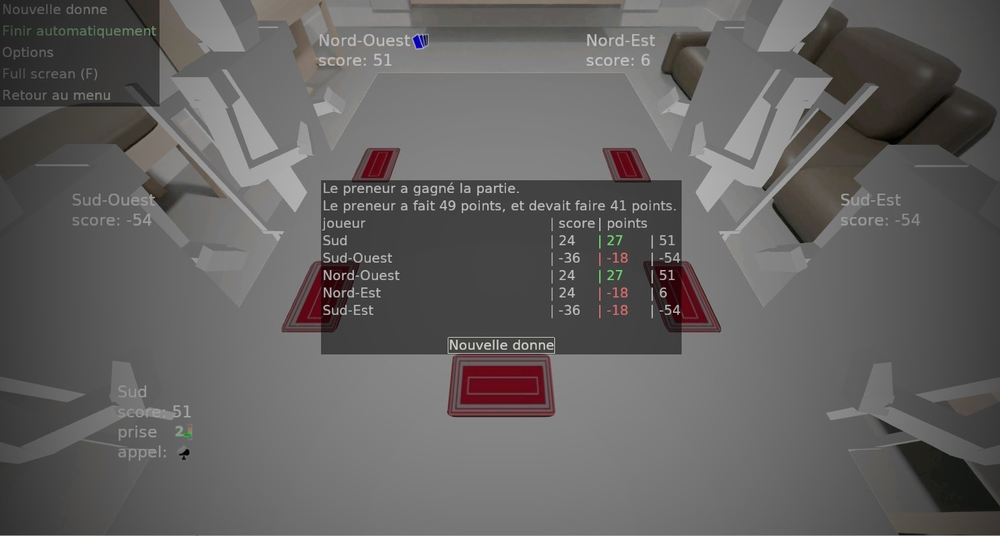
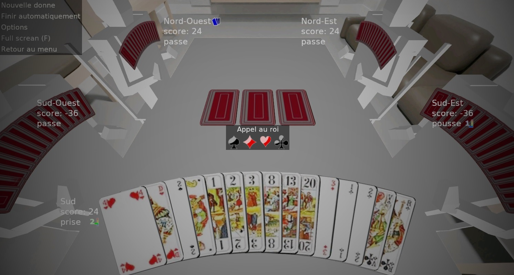

Version alpha 1 juillet 2026
J'ai repris le développement du jeu après une pause. La principale amélioration concerne l'intelligence artificielle, qui reste en cours de développement.
Page disponible uniquement en français 
Tarot au bout reproduit le jeu de Tarot à 4 ou 5 joueurs, en solo : vous jouez contre l'ordinateur. Les règles appliquées sont celles de la Fédération Française de Tarot.




J'ai repris le développement du jeu après une pause. La principale amélioration concerne l'intelligence artificielle, qui reste en cours de développement.
L'interface a été entièrement refaite avec ma propre bibliothèque (TRE), qui permet notamment de rendre le jeu jouable dans un navigateur web. Le cœur du jeu est stabilisé. L'intelligence artificielle a progressé, mais reste encore loin de l'objectif final.
J'ai développé le cœur du jeu en C++ : il gère le déroulement des parties, avec une IA basique. L'affichage repose sur Qt, via son interface avec OpenGL 2.